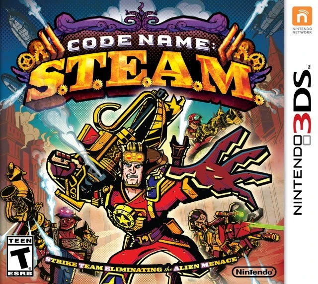

.webp)


CODE NAME S.T.E.A.M.
Alien invasion in a steampunk world!

Available platforms: 3DS
Strategy RPGs aren't for everyone, I used to think that, but would you pay attention if I told you Lincoln was in this one?
Historical fiction. Steampunk. Aliens. And a not dead Lincoln, this game has everything.
Being serious now, Code Name S.T.E.A.M. is a strategy RPG developed by Intellegent Systems, who you know most for the Fire Emblem seires, WarioWare, and the Paper Mario series. That's quite the credibility.
Code Name S.T.E.A.M. is a bit simpler than most other strategy RPGS. Code Name has fully 3D Maps, with a 3rd shooter camera, meaning you have to traverse through the limited amount of spaces you can move. This also means that for all weapons in the game, you have to aim to do damage. Another thing is that there are no 'troops' like other SRPGs, instead, every 'type' of troop (I don't know much of SRPGs I'm sorry) is personified by one singular character. Every alien in the game (unless stated or mechanically proven otherwise), has a weak spot that once aimed at correctly, does extra damage, rewarding good aim.
These quirks make Code Name S.T.E.A.M. stand out from other games, if the premise didn't pique your interest enough.
I haven't fully finished the game but I can GUARANTEE that you'll have fun with it. It never takes itself seriously, in fact, it relishes in the crazy ideas it just keeps introducing, and for that I think it's best to play the game as blind as possible to be surprised by what ever thing you find as "crazy".
Heads up though, because there's a chance if you buy a physical copy, it may not work. It might be me having a bad streak of luck, but I bought 2 catridges (for crazy low prices for 3DS games), and both times the catridge ended up not working. I didn't get scammed or anything, Code Name S.T.E.A.M. is cheap in general, but if you want to avoid having to see a corrupted game screen, your best next bet is to emulate it.